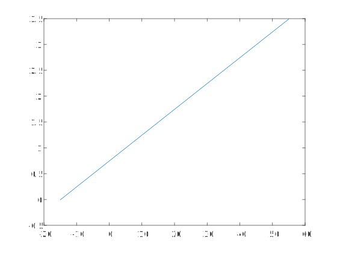
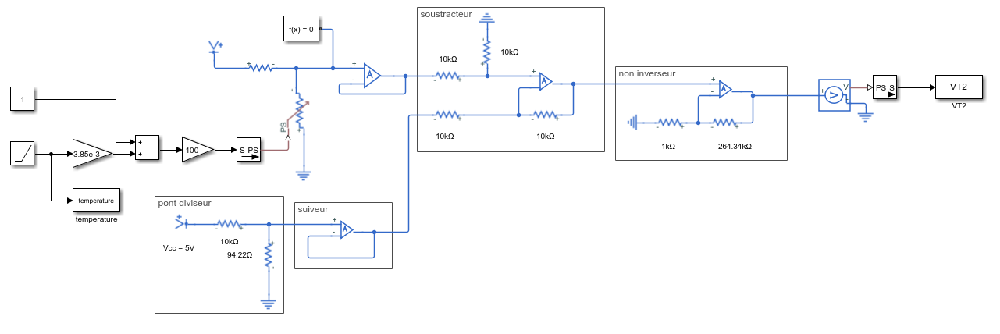
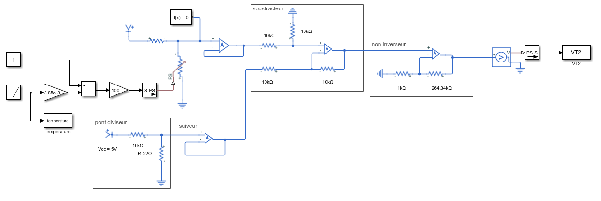

Question sociétale: Comment assurer une certaine continuité de la chaîne du froid ?
Problématique : Comment maintenir des éléments à une température plus fraîche que la température extérieure?
Problématique technique : Comment informer l’utilisateur de la température intérieure ?
Problématique : Comment traiter l'information provenant de température ? Quelle architecture faut-il mettre en place pour satisfaire le cahier des charges ?
1. ETUDE N°1 DE LA GLACIERE : ETUDE DE LA FONCTION CONDITIONNEMENT
1.1 Partie 1 :recherche d’une architecture de solution
Objectif : Valider par une simulation le choix d’une architecture
1.
\(V_{cc} = 5V\) et \(R_{1} = 10kΩ\)
\(R_{T} = 100+3.85\times 10^{-1}T\)
\(V_{T} = \frac{R_{T}}{R_{1}+R_{T}}\times V_{cc}
=
\frac{ 100+3.85\times 10^{-1}T}{10 000+ 100+3.85\times 10^{-1}T}\times 5 =
\frac{ 500+19.25\times 10^{-1}T}{10 100 + 3.85\times 10^{-1}T}\times 5\)
\(V_{T}\left(-15\right) = 0.0467V\)
\(V_{T}\left(55\right) = 0.05986V\)
2.
\(V_{REF} = V_{T}\left(-15\right)
= 0.0467V
\)
3.
\(A = 265.36
\)
4.
\(\to\)voir conditionnement_partie1.slx
5.

le model est valider car la courbe passe bien par \(\left(-15;0\right)\) et \(\left(55;3.5\right)\)
6.
le fait dutiliser \(R_1 = 10 kΩ\) permet d'avoir une droite presque lineaire.
7.
\(V_{T2} =0.05T+0.75 \)
1.2 Partie 2 :modélisation multi-physique du conditionnement
Objectif : Modéliser la solution structurelle
1.
\(V_{cc} = 5V\) et \(R_{1} = 10kΩ\)
\(R_{T} = 100+3.85\times 10^{-1}T\)
\(V_{T} = \frac{R_{T}}{R_{1}+R_{T}}\times V_{cc}
=
\frac{ 100+3.85\times 10^{-1}T}{10 000+ 100+3.85\times 10^{-1}T}\times 5 =
\frac{ 500+19.25\times 10^{-1}T}{10 100 + 3.85\times 10^{-1}T}\times 5\)
\(V_{T}\left(-15\right) = 0.0467V\)
\(V_{T}\left(55\right) = 0.05986V\)
\(\to\)voir conditionnement_partie2Z.slx
 
